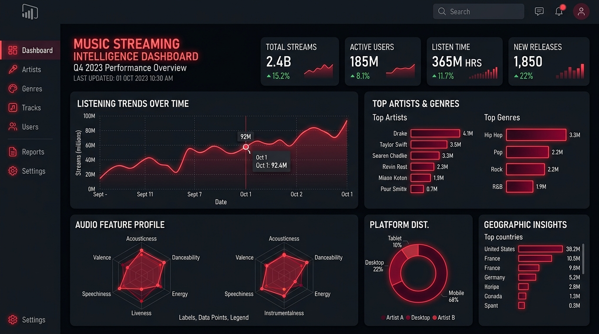

Spotify Streaming Analytics & Track Intelligence
Organized 10,000+ raw music catalog records into a multi-table star schema. Authored 20+ custom DAX measures (running averages, popularity distributions, explicit ratios) with dynamic slicers to analyze listening trends.